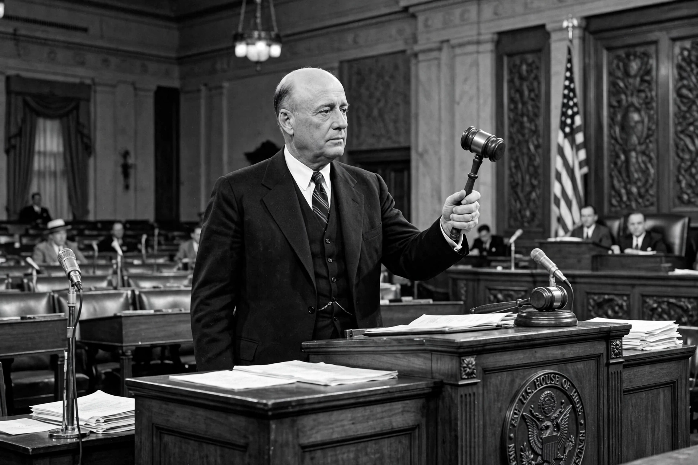

| Sam Rayburn | |
|---|---|
 Sam Rayburn, longest-serving Speaker of the U.S. House | |
| Born | Samuel Taliaferro Rayburn, January 6, 1882, Roane County, Tennessee, U.S. |
| Died | November 16, 1961 (aged 79), Bonham, Texas, U.S. |
| Political party | Democratic |
| Office | 43rd Speaker of the U.S. House of Representatives |
| In office | 1940–1947; 1949–1953; 1955–1961 |
| District | Texas's 4th congressional district (1913–1961) |
Samuel Taliaferro Rayburn (January 6, 1882 – November 16, 1961) was an American politician who served as a Democratic U.S. Representative from Texas for 48 years and as Speaker of the House of Representatives for over 17 years—the longest tenure of any Speaker in American history. A close ally of Franklin D. Roosevelt and mentor to Lyndon B. Johnson, Rayburn shaped much of the New Deal and mid-century American legislation.
Rayburn was born in Tennessee and moved with his family to a cotton farm near Flag Springs, Texas, as a small child. Inspired by a speech of Congressman Joseph W. Bailey, he resolved early to become Speaker of the House. He worked his way through East Texas Normal College, taught school, studied law, and was admitted to the bar in 1908. He served in the Texas House of Representatives, becoming its Speaker in 1911, and won election to Congress in 1912.
As chairman of the Interstate and Foreign Commerce Committee, Rayburn co-authored major New Deal measures including the Securities Act of 1933, the Securities Exchange Act of 1934, the Public Utility Holding Company Act, and the Rural Electrification Act. He became majority leader in 1937 and Speaker in 1940, succeeding William Bankhead.
Rayburn presided over the House through World War II, the early Cold War, and the 1950s, losing the gavel only during the Republican Congresses of 1947–49 and 1953–55, when he served as minority leader. Famous for his after-hours "Board of Education" sessions in a Capitol hideaway, he prized institutional loyalty and famously advised newcomers: "To get along, go along." He mentored Lyndon Johnson from the latter's first days in Washington.
Rayburn died in office of pancreatic cancer in 1961. The Rayburn House Office Building, completed in 1965, bears his name, and his Bonham home is preserved as the Sam Rayburn House Museum.
Speaker of the House · Lyndon B. Johnson · Henry Clay · New Deal